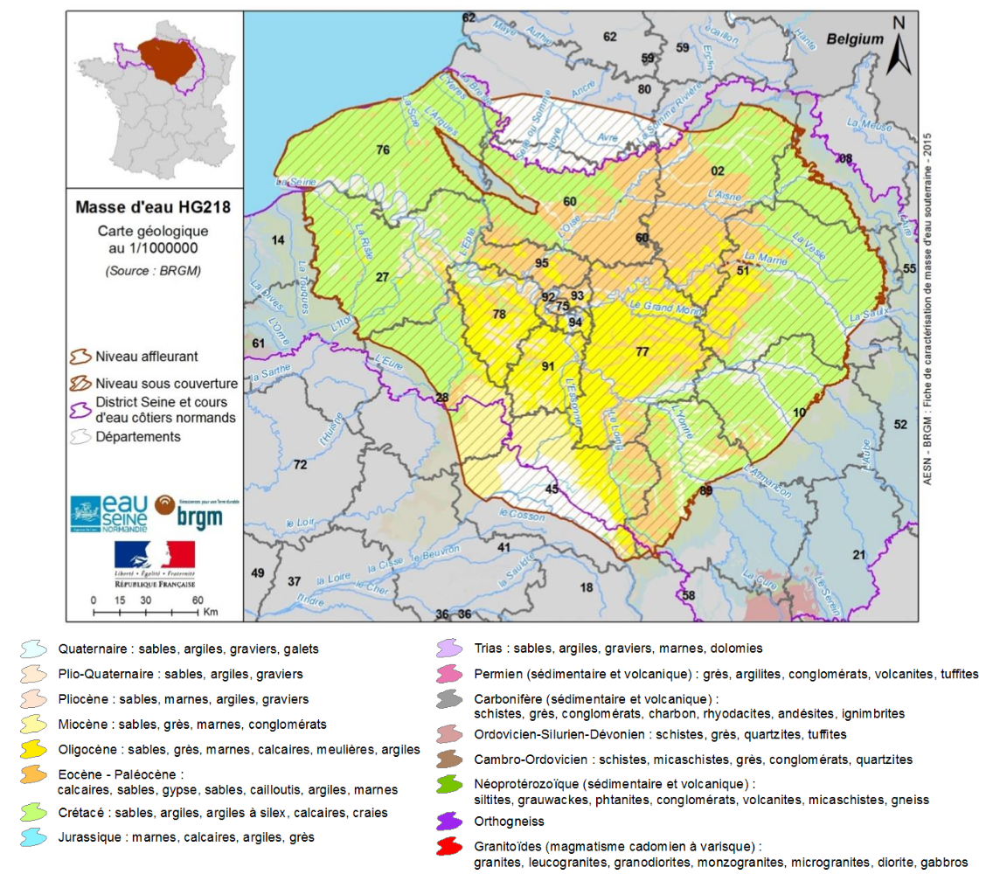
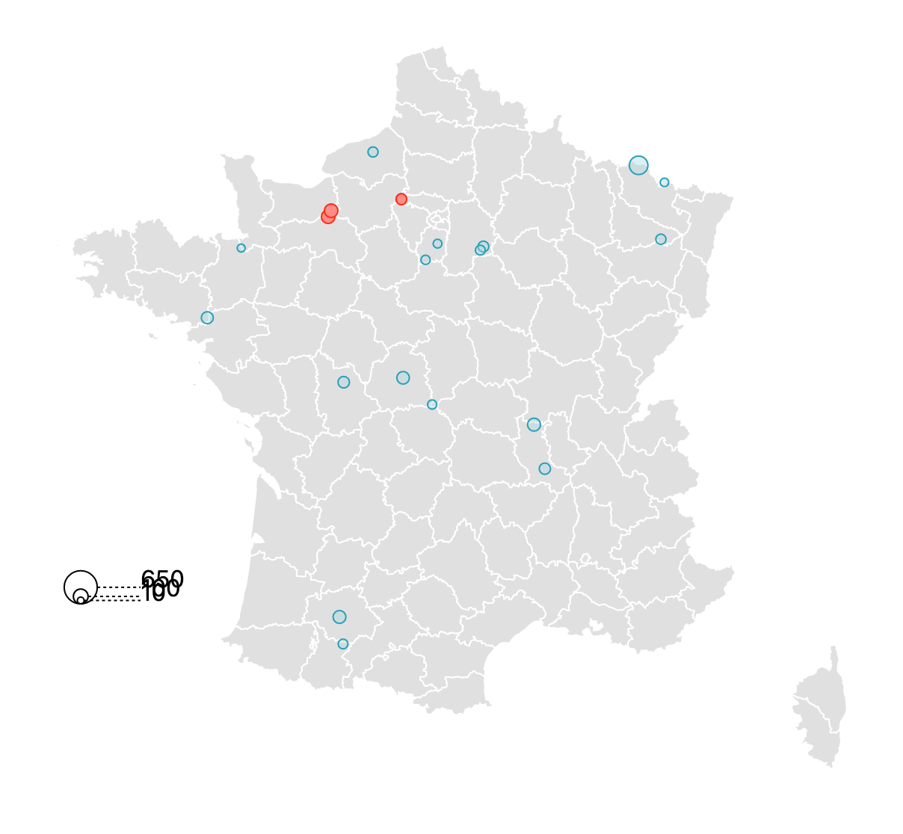
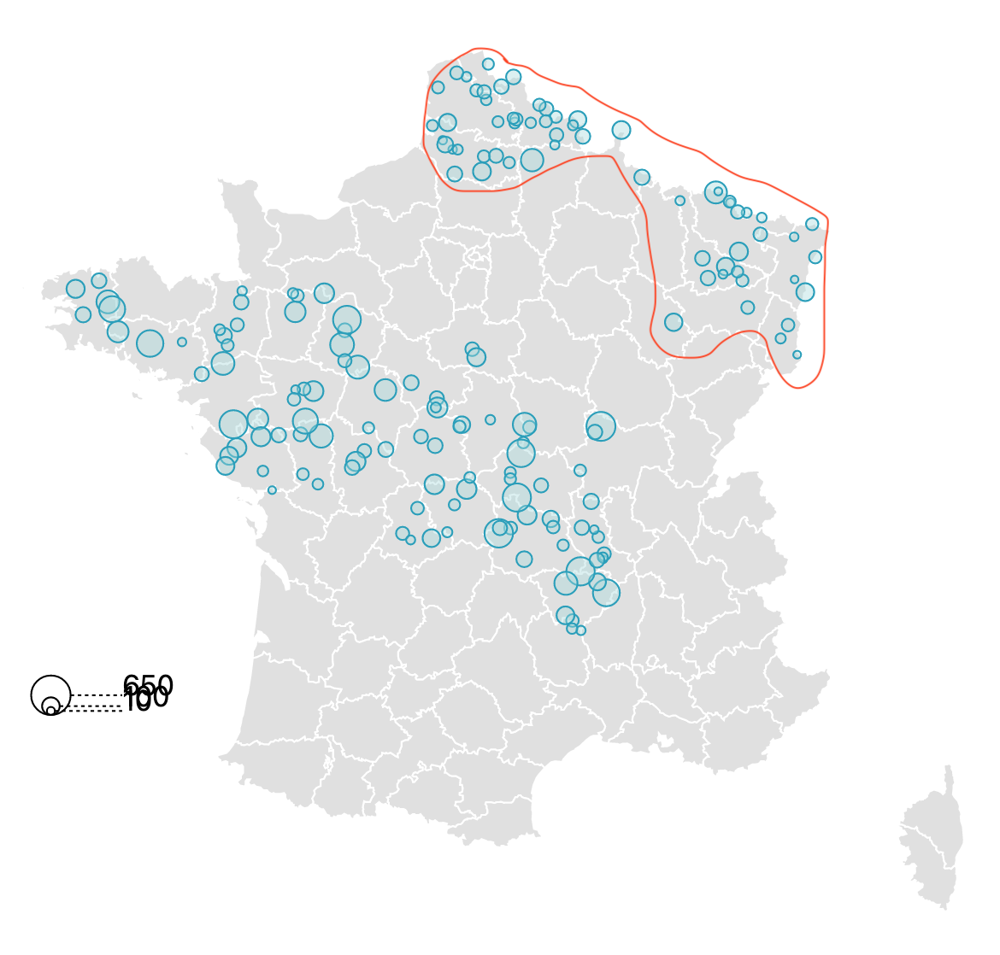

This website shows France's water source, their qualities, and specific risks and pollutants.
This map shows the water bodies and colors them according to their quality. For more details about composition, click on the water source. You can scroll down for additional information.
This visualization is for local inhabitants that wants to check the quality of water next to where they live. Afterall, it's important to drink clean water that won't endanger your health.
Water Sources
Click a source for details
Did you know...?

Biggest Water Body in France
The biggest body of water in France is the Albien-Neocomien Captif body of water.
It is entirely underground. It is 60,000 km2 big. Here is a map of it.
Fluorine
Not a lot of bodies of water in France contain fluorine.
However, a few of them have a very high concentration of fluorine.
They are l'Epte (over 110 mg/L), la Vie (70 mg/L) & la Touques (50 mg/L).
You can see here the map of the bodies of wtaer with fluorine. The ones in red are the ones mentionned above.


Uranium
There are quite a few bodies of water containing uranium in them.
According to the World Health Organization, there isn't enough to suggest that natural uranium in water causes cancer.
It can however lead to kidney diseases if the concentration is too high.
Here is a map of the bodies of water containing uranium. Excess uranium appear mostly in the highlighted area.